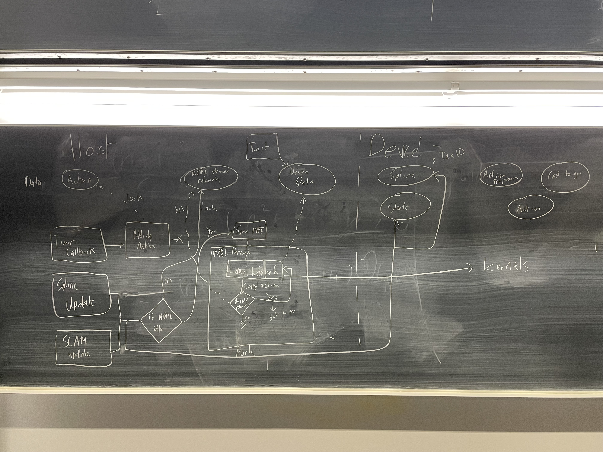
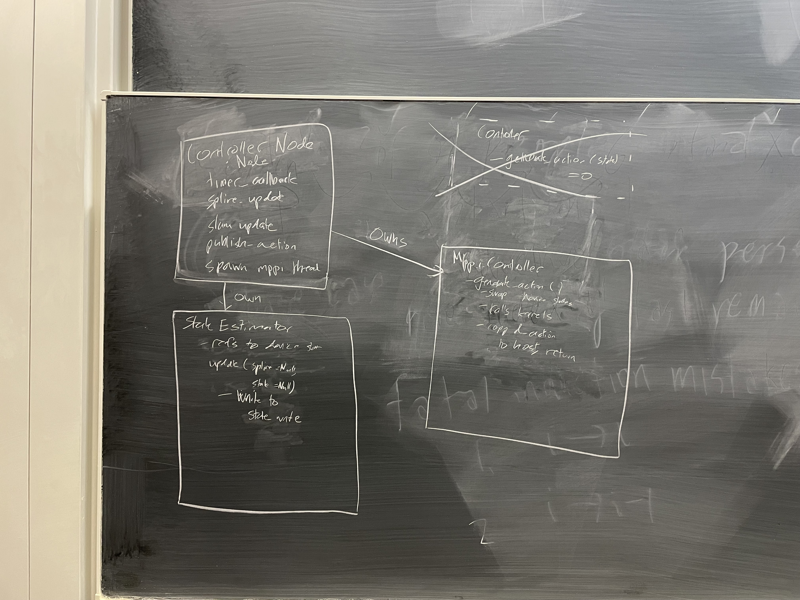

Class ControllerNode
 Warning
doxygenclass: Cannot find class “controls::nodes::ControllerNode” in doxygen xml output for project “driverless_controls” from directory: doxyxml/
Warning
doxygenclass: Cannot find class “controls::nodes::ControllerNode” in doxygen xml output for project “driverless_controls” from directory: doxyxml/